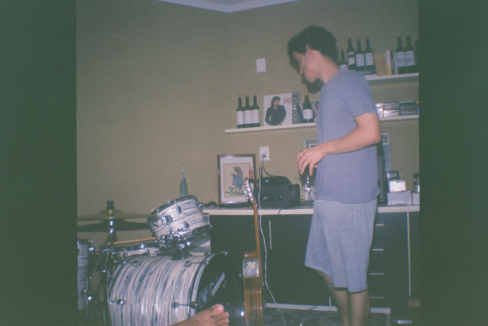
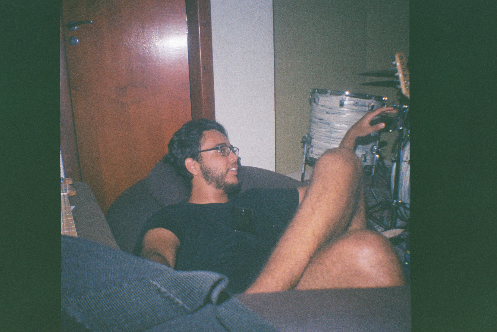
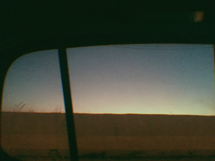
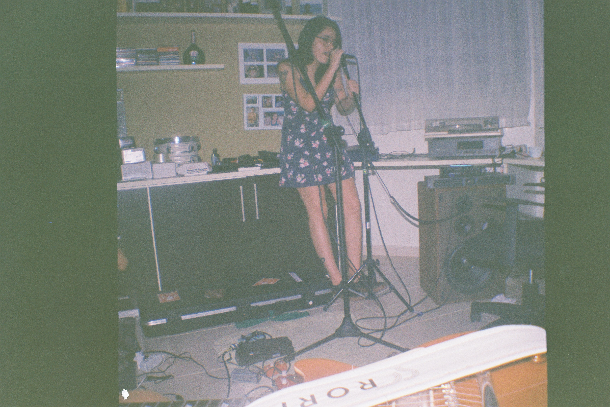

Nubro
Somatório dos Caminhos
28.08.2019
GÊNERO(S): Neo-psych, Lo-fi, Ambiente, Experimental
Somatório dos Caminhos nasceu de um sonho.
The way Lenker sings “kiss kiss your eyes again”—the subtle repetition, the unexpected pause at the end of the line—feels like she has taken the pulse of joy itself, capturing the cadence of a racing heart in a moment of stillness.



